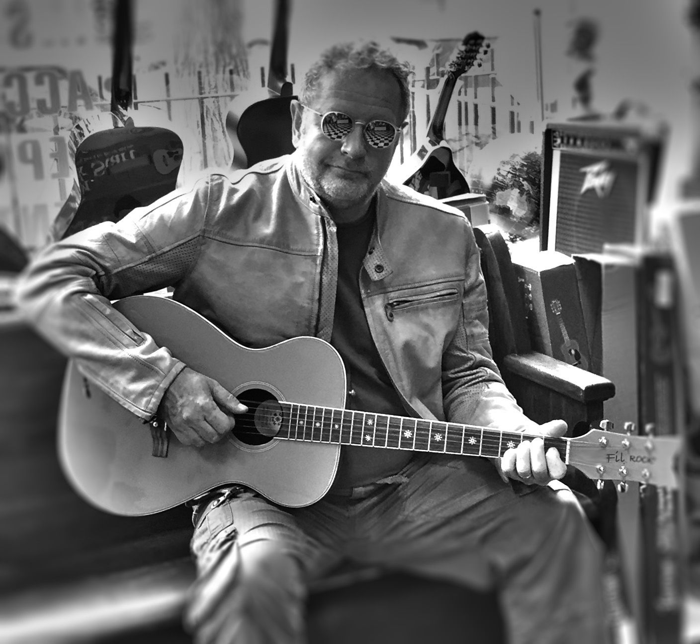
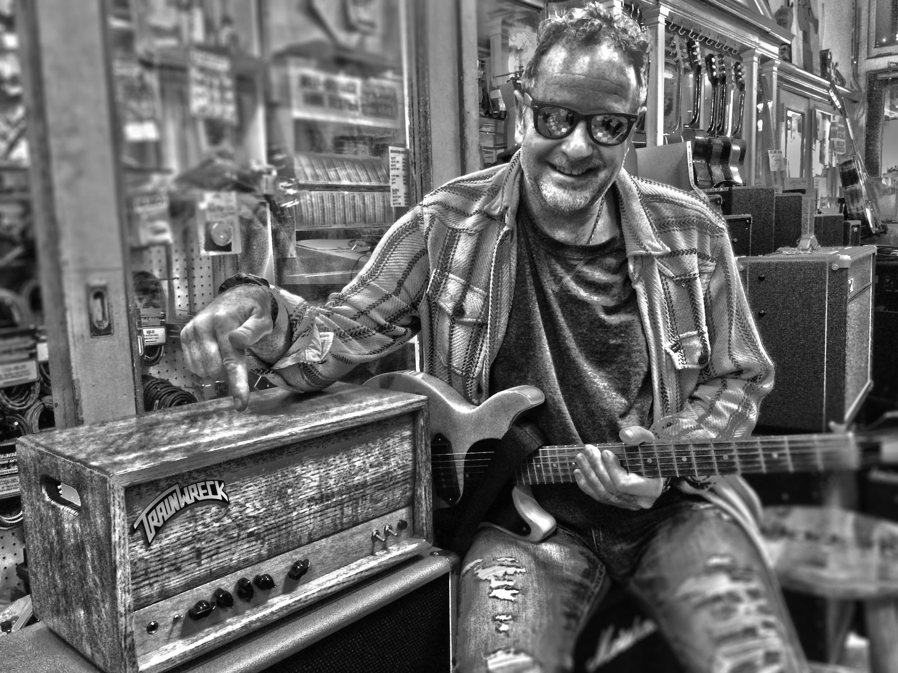
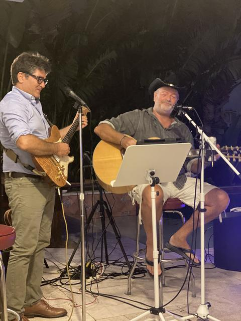
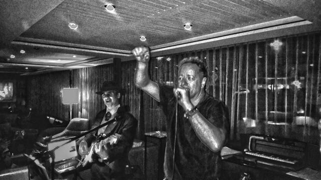
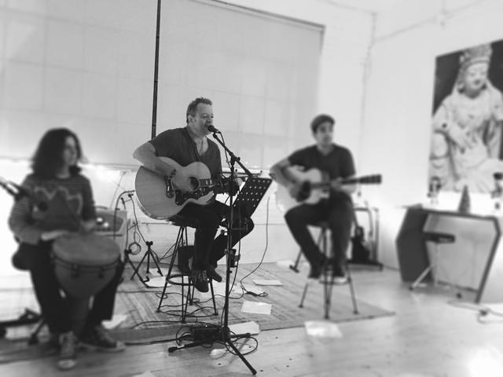
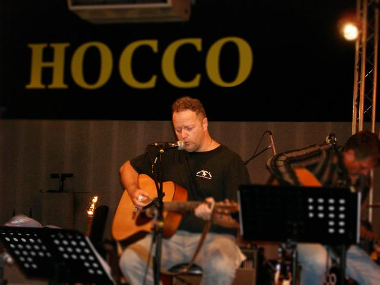
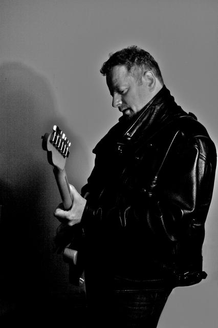
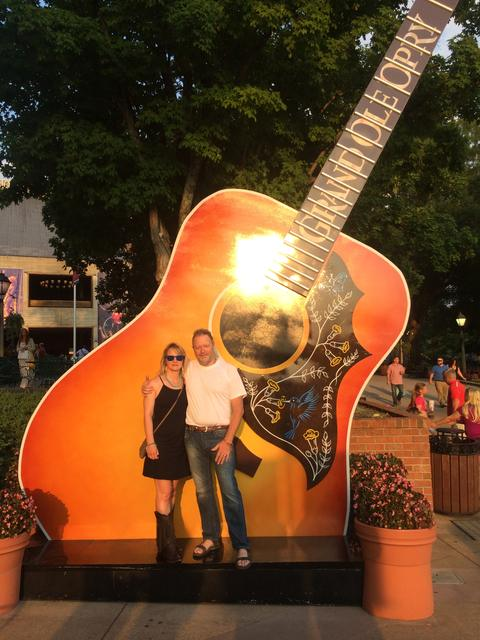

Fil
French chansons and classic rock, played live.Chansons françaises et classic rock, en live.
Singer and guitarist in South Florida. Fil plays bistros, wine bars, pubs and private parties — in French and in English. Chanteur et guitariste en Floride du Sud. Fil joue dans les bistrots, les bars à vin, les pubs et les soirées privées — en français et en anglais.
Next showsProchains concerts
Watch Fil liveFil en live
Filmed at real gigs — from a wine bar in Lauderdale-by-the-Sea to the Loft Sessions in Hoboken and Hocco Studio in Paris.Filmé pendant de vrais concerts — d'un bar à vin de Lauderdale-by-the-Sea aux Loft Sessions de Hoboken et au Hocco Studio à Paris.
Two languages, one showDeux langues, un seul show
Fil mixes both worlds in the same night. These are the artists he covers to get your party going.Fil mélange les deux mondes dans la même soirée. Voici les artistes qu'il reprend pour animer vos soirées.
American & BritishAméricains et britanniques
America Louis Armstrong Randy Bachman The Band The Beatles Blues Brothers Ray Charles Eric Clapton Sam Cooke Crowded House Dire Straits Bob Dylan Eagles Melissa Etheridge Fleetwood Mac James Gang Judy Garland Jimi Hendrix Buddy Holly Billy Joel Elton John Dr. John Bon Jovi Lenny Kravitz Daniel Lanois Lyle Lovett Little Feat Lynyrd Skynyrd Bob Marley John Mayer Curtis Mayfield Van Morrison Roy Orbison Tom Petty Wilson Pickett Elvis Presley Prince Queen Lou Rawls The Rolling Stones Bruce Springsteen Steve Miller Band Sting Supertramp U2 Stevie Ray Vaughan Suzanne Vega Joe Walsh Muddy Waters Wings Neil Young ZZ Top
FrenchFrançais
Richard Anthony Charles Aznavour Brigitte Bardot Michel Berger Jacques Brel Francis Cabrel Jean-Patrick Capdevielle Julien Clerc Dalida Joe Dassin Michel Delpech Jacques Dutronc Nino Ferrer Michel Fugain France Gall Serge Gainsbourg Gipsy Kings Jean-Jacques Goldman Johnny Hallyday C. Jérôme Michel Jonasz Bernard Lavilliers Maxime Le Forestier Louane Enrico Macias Eddy Mitchell Claude Nougaro Édith Piaf Michel Polnareff Zachary Richard Henri Salvador Michel Sardou Alain Souchon Téléphone Charles Trenet Laurent Voulzy Zaz
Book Fil for your eventRéservez Fil pour votre soirée
Tell Fil about your night. He answers every request by email.Parlez de votre soirée à Fil. Il répond à chaque demande par e-mail.
- Restaurants, bistros & wine barsRestaurants, bistrots et bars à vinWarm acoustic sets that suit dinner and drinks.Des sets acoustiques chaleureux pour le dîner et l'apéro.
- Pubs & loungesPubs et loungesClassic rock that people sing along to.Du classic rock que tout le monde chante.
- Private partiesSoirées privéesBirthdays, anniversaries, New Year's Eve, house parties.Anniversaires, fêtes, réveillons, soirées à la maison.
- French clubs & eventsClubs et événements françaisA full evening of chanson and variété française.Une soirée entière de chanson et de variété française.
- Sings in French and in EnglishChante en français et en anglais
- Solo, or with guest musiciansEn solo, ou avec des musiciens invités
- Brings his own professional sound systemApporte sa propre sono professionnelle
- Fort Lauderdale, Pompano Beach, Boca Raton, Miami and aroundFort Lauderdale, Pompano Beach, Boca Raton, Miami et alentours

From Paris to Pompano BeachDe Paris à Pompano Beach
Fil was born and raised in France. He started playing in a band near Paris at 16 and has kept playing ever since — in France, across the United States, and now in South Florida. He also takes photos wherever he goes.Fil est né et a grandi en France. Il a commencé à jouer dans un groupe de la région parisienne à 16 ans et n'a jamais arrêté depuis — en France, à travers les États-Unis, et aujourd'hui en Floride du Sud. Il prend aussi des photos partout où il passe.
- Paris region, FranceRégion parisienneFirst band at 16, the Stollen Batteurs, playing original songs.Premier groupe à 16 ans, les Stollen Batteurs, avec des chansons originales.
- Boise, Idaho — 1984Boise, Idaho — 1984Moves to the United States and starts playing local bars.S'installe aux États-Unis et commence à jouer dans les bars du coin.
- San FranciscoLearns the American standards that get you booked in local venues.Apprend les standards américains qui ouvrent les portes des salles locales.
- New York & New JerseyNew York et New JerseyPlays as a duo — two guitars, two voices — in bars and festivals, and plays the Loft Sessions in Hoboken.Joue en duo — deux guitares, deux voix — dans les bars et les festivals, et joue aux Loft Sessions de Hoboken.
- South FloridaFloride du SudChez Vincent Wine Bar, Umberto's in Pompano Beach, Chez Marie French Bistro in Boca Raton, Indian Spring Country Club in Boynton Beach, Kelly Brothers Irish Pub in Fort Lauderdale.Chez Vincent Wine Bar, Umberto's à Pompano Beach, Chez Marie French Bistro à Boca Raton, Indian Spring Country Club à Boynton Beach, Kelly Brothers Irish Pub à Fort Lauderdale.
On the roadSur la route
See all photosVoir toutes les photos





FriendsLes amis
See all photosVoir toutes les photosFans, friends and family, and some famous artists Fil has met along the way. Tap a photo to see it larger.Fans, amis et famille, et quelques artistes célèbres rencontrés en chemin. Touchez une photo pour l'agrandir.